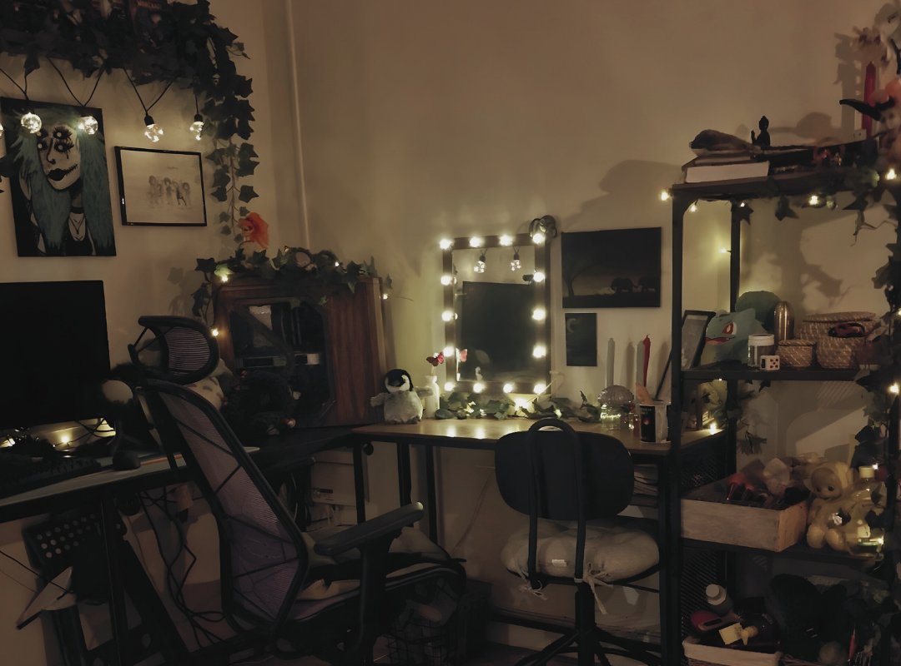

Studio-uppställning
Ett mysigt teknikhörn byggt för varmt ljus, lugn fokus och nattlig kreativitet.
Min studio är en lugn hörna byggd runt mjukt ljus, naturliga texturer och ett lugnt, stabilt arbetsflöde.
Det är inte en stor produktionsyta eller en påkostad gamer-rum — det är mer som en liten verkstad gömd inne i en mysig stuga.
Allt här är valt för att stödja långa, mjuka kreativa sessioner där idéer kan växla och växa utan press.
Belysning & Atmosfär
Hjärtat i uppställningen är belysningen. Jag använder varma, lågkontrasterande lampor istället för ljusa tak-LEDs. Målet är ett mjukt sken
— tillräckligt för att hålla allt synligt, men dämpat nog att känna som sen kväll.
Skuggor förblir lite korniga, nästan film-liknande, och de gröna noterna i rummet antyder en subtil solarpunk-stämning.
Inget hårt. Inget som skyndar. Bara en lugn arbetsplats som surrar mjukt i bakgrunden.
Skrivbord & Arbetsplatslayout
Mitt skrivbord hålls avsiktligt enkelt: trätoner, en ren yta, och endast det väsentliga inom räckhåll.
Jag håller utrymme öppet så jag kan växla mellan uppgifter enkelt
— redigering, skissa thumbnails, koda en layout, eller
förbereda en scen för Twitch. Det finns plats för en anteckningsbok, en mugg med något varmt, och några små objekt som
hjälper till att sätta tempot: en växt, ett bit drivved, en gammal mekanisk del, en penna som känns bra i handen.
Hela layouten är designad runt flöde. Inget kladd. Inget som tvingar uppmärksamheten bort från arbetet. Bara en långsam, stadig rytm.

Hårdvara & Utrustning
♡ En stabil PC-uppställning inställd för redigering, streaming och designarbete
♡ Dubbla skärmar för ren multitasking: kod på ena, visuella element på den andra
♡ En mikrofon med mjuk, rundad profil för att hålla min röst varm och mjuk
♡ En kamera vinklad för att fånga den mysiga belysningen utan att känna sig iscensatt
Utrymmets Syfte
Denna uppställning handlar inte om produktivitetsknep.
Det handlar om att skapa en lugn grund som stödjer den typ av innehåll jag skapar: varm,
genomtänkt, lite mossig vid kanterna, och aldrig i skynd.
Det är en studio byggd för att uppmuntra konsekventa små steg.